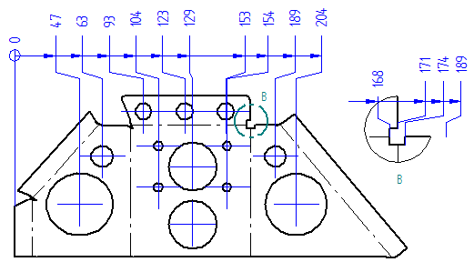
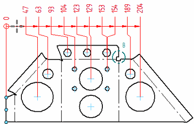
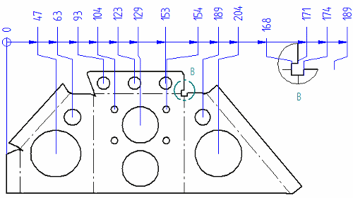
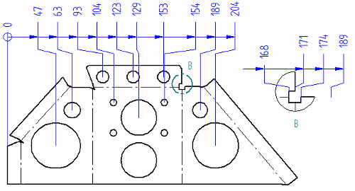

Place coordinate dimensions between drawing views
You can place coordinate dimensions between two drawing views that share an orientation and rotation, such as a principal view and a detail view.

-
Choose Home tab→Dimension group→Automatic Coordinate Dimension
 .
. -
On the Automatic Coordinate Dimension command bar:
-
Click Select Drawing View
 , and then select the principal view.
, and then select the principal view. -
Verify and adjust the keypoint selection using the Keypoint Options dialog box.
-
Click Accept.
-
-
Click an element or keypoint that you want to be the coordinate origin dimension.
-
Move the cursor until the dimensions are oriented the way you want them, and then click to place all of the dimensions at once.

The Automatic Coordinate Dimension command remains active.
-
Select the detail view, adjust the keypoint selection, and then click Accept.
-
Click a coordinate dimension in the principal drawing view to identify the alignment set that you want to reference in the detail view.
At this point:
-
All of the new dimensions appear in the detail view, in dynamic display mode.
-
You can make adjustments to the font size and round-off on the command bar.
-
-
Do one of the following:
-
To place the dimensions aligned between the two views, click.

-
If you want to move the detail view, you must remove the alignment between the dimensions in the two views:
-
Hold the Alt key while you move the cursor to reposition the dimensions.
-
Release the Alt key, and then click.

Now you can move the detail view to another sheet, and the dimensions retain their values.
-
-
-
To remove the alignment between dimensions you already placed:
-
Choose Home tab→Dimension group→Remove from Alignment Set
 .
. -
Drag a box from right to left to select the coordinate dimensions in the drawing view, and then click Accept on the command bar.
-
-
If the detail view references an origin value that is not on the same sheet, you can use options on the Lines and Coordinate tab in the Dimension Style dialog box or in the Properties dialog box to change the coordinate origin value to a nonzero value.
How do I
Place coordinate dimensions automaticallyPlace a coordinate dimension
Place a coordinate dimension using a coordinate system
Place an angular coordinate dimension
Change the origin dimension in a coordinate dimension group
Change the coordinate origin value
Learn more
Ordinate dimensionsCoordinate dimension alignment sets
Adding and removing jogs on coordinate dimensions
Look up more details
Dimension command barCoordinate dimension handles
Automatic Coordinate Dimension command
Automatic Coordinate Dimension command bar
Keypoint Options dialog box
Coordinate Dimension command
Angular Coordinate Dimension command
Change Coordinate Origin command
Lines and Coordinate tab (Dimension Style and Dimension Properties)